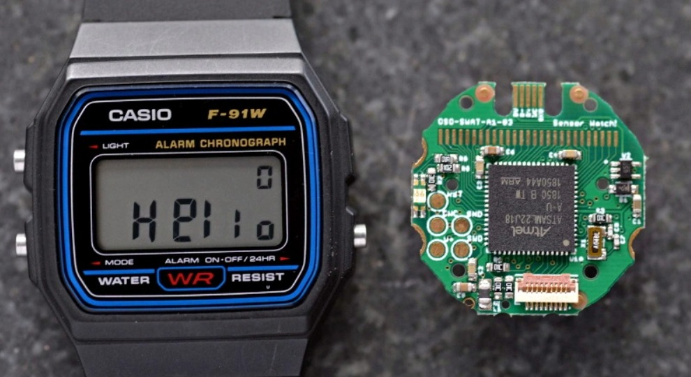
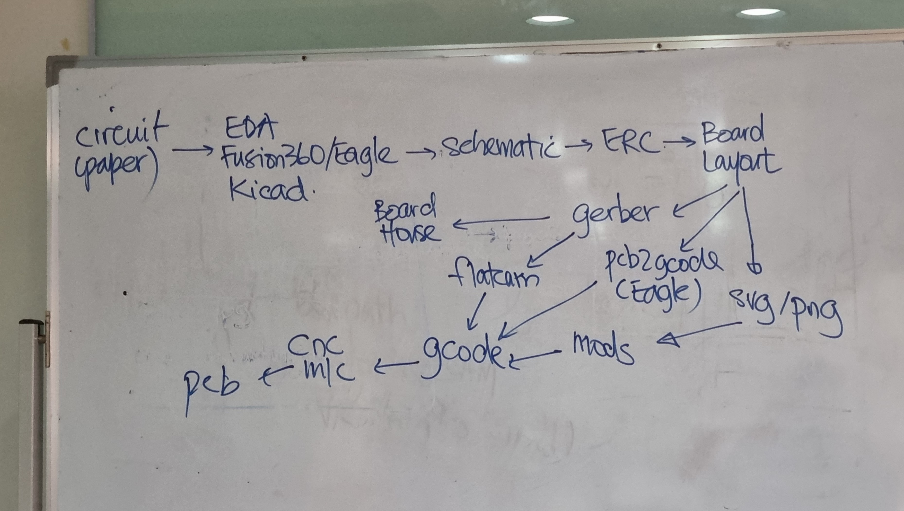
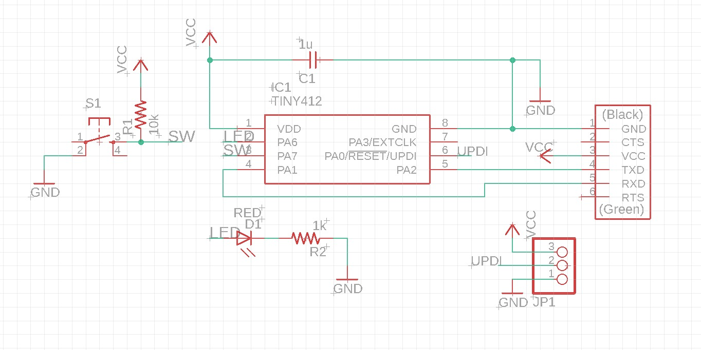
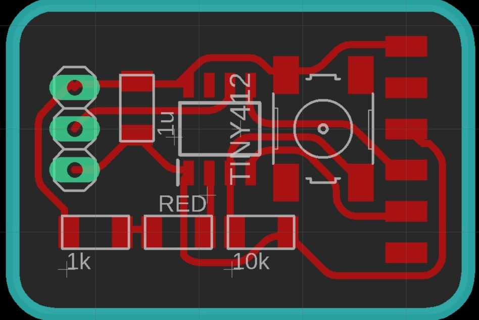
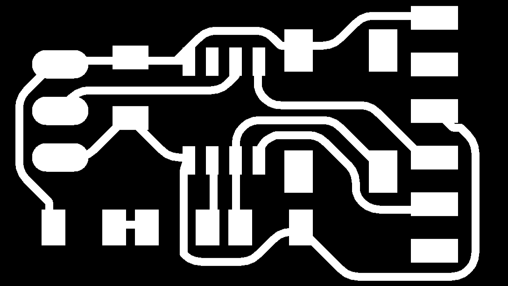
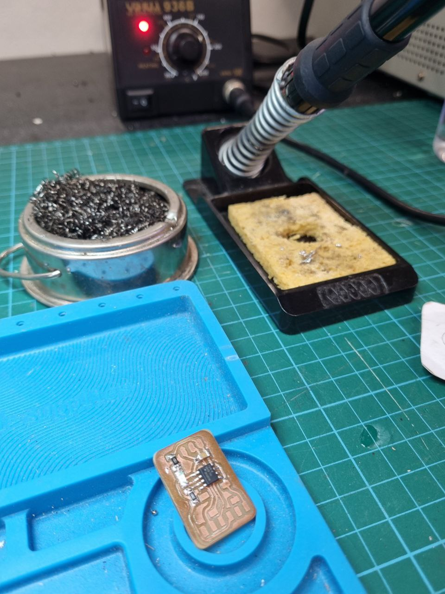
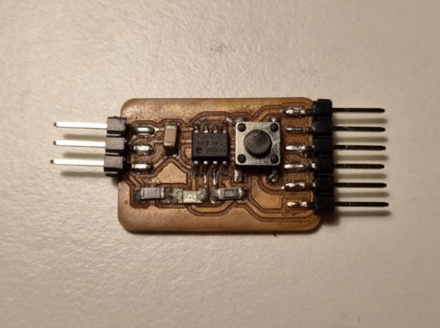
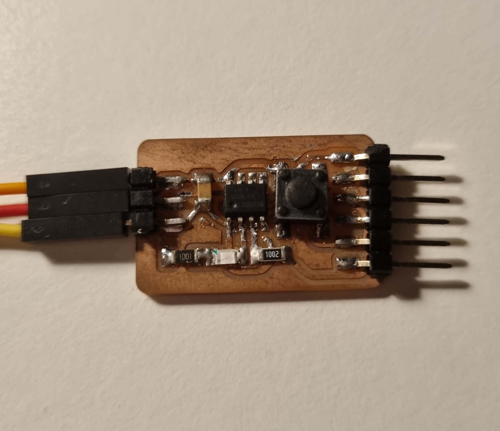

The previous topic we talked about production of a PCB, now have you ever wonder what goes on before that? In this page we shall talk about how that is done, which is conciving the design of circuit boards!
First off, before a circuit board is made, it needs to know what will its purpose be. That way, the PCB will be able to take on its tasks efficiently. Therefore, before designs are drafted up, there needs to be the some user studies which includes the identification of the problem. For example, before a digital watch is made, its size constraints and function needs to be known, thus allowing manufacturers to produce a clean design. As such, the commercially built watch below is a perfect example of a well thought out PCB design.
Therefore, PCB design is highly important, espcially when size is a big factor. So after a PCB is planned out, what will the process it undertakes before become a real PCB? Below is a drawn out mind map to help you understand how the process takes place!
The process starts out with a sketch of how the pcb circuit will look like on paper, there mistakes can be easily removed and improvements can be easily added in! Following that a PCB design software is needed to draft up the design. Some typical software used are electronic design automation (EDA), KiCAD and Eagle. Upon designing it on computer, a schematic is produced, showing where the components are connected to. Following that, the designs are put thru an elctrical rules check, where it enables designers to screen a PCB design for signal quality. Next up, the board layout is planned, ensuring that all of the componets are able to connected correctly while having the desired size. After this, the board designs are exported in different fomats depending on the fabrication method. If the board is manufactured commercially, it is exported to a gerber file and sent to the board house. Alternatively, a gerber file can produce a g-code with a software called flatcam. Eagle also has a built in software allowing g-code to be generated as well. Lastly, a svg/png file can be exported and thru the mods website, a g-code can be generated. Once a g-code is generated, the cnc machine is put into action and a PCB is made!
Starting off, I wanted to make Tiny412 Helloboard as it could do multitudes of functions with one single tiny board. Therefore I started to design the board on eagle. Firstly, a schematic was drafted out with where the components are connected to. Below is the schematic drafted in eagle.
Following that, the board layout was computed. This part was abit challenging as some of the components were unable to get across the board to have a successful connection. The placement of the components at the right place with the tracks connecting fully was difficult, but after many tries it pulled thru! Below is a picture of the final board layout, fully connected!
On the board layout above, the component connections are indicated in red, the components are indicated in white, the pins are indicated in green and the board outline is indicated in blue. With this a png photo was exported and a g-code was produced with the mods website. Below is a picture of the board traces.
After this, the design went thru the fabrication process which was covered in the previous topic. To view that topic click HERE!! The hello board was then completed with the final soldering as seen below.
Below is an image of the final board, with all the components soldered carfully. Now the board is ready for testing and programming! This will be covered in the next topic. To skip there click HERE!!
However, as I used the board more and more I realised that the traces were peeling out due to my bad soldering. Thus I needed to redo my board. This time around I incorperated a green LED instead of a red LED and it worked really well! As there is more and more practice for soldering I managed to get better!
The PCB was able to blink above due to the embedded coding I learnt in the next chapter! To skip there click HERE!!
Click here to return back to documentations!!